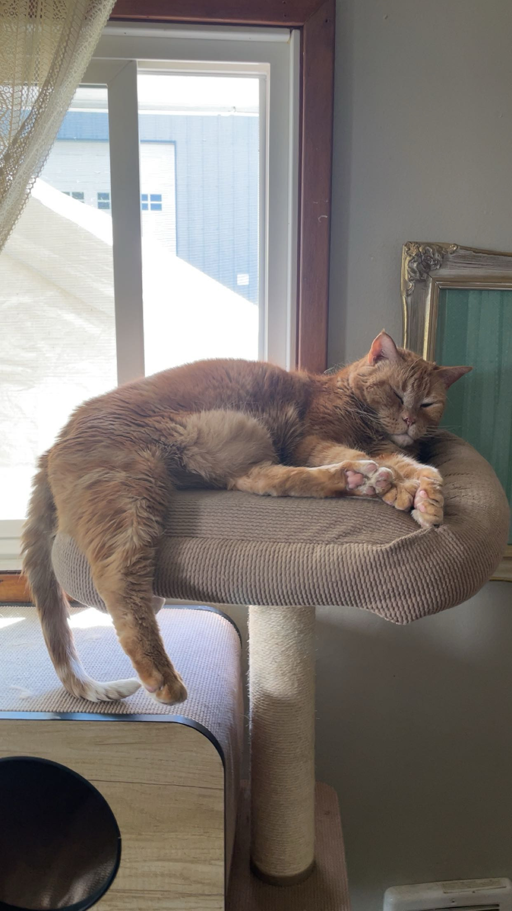
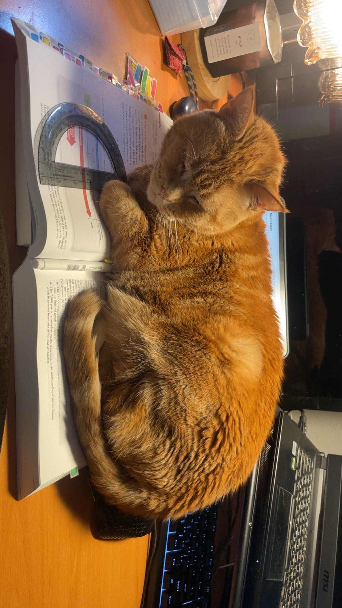

Personality
Rosemary is a very independent cat that takes a while to get used to new people. If she doesn't like you she will let you know by sitting in the doorway blocking your path and staring at you! She is known to hold a grudge. Once she recognizes you are cool she typically is still keeps her distance. Rosemary is the oldest of the 3 cats and is also the largest.
Favorites
- Favorite Sleeping Spots: my bed, top of my chair, on the cat tree, armrest of couch
- Favorite Toy: Laser, stuffed carrot, springs, catnip toys, cardboard scratch pad
- Favorite Person: Charity (Me!)